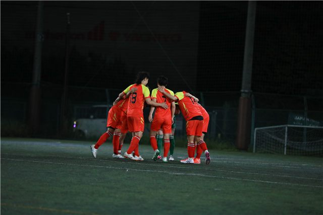
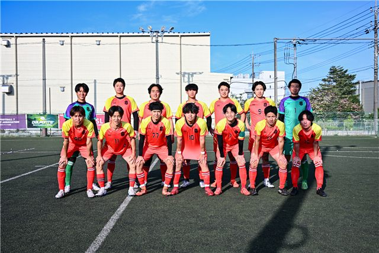

Wanted
誰よりも熱く、
本気で上を目指す仲間へ。
FC TRIDENT TOKYOは、FOOTBALL 7 SOCIETY LEAGUE 関東リーグ 4部Cで開幕8連勝、首位を走るソサイチチームです。相手が2倍上手かったら、3倍体を張る。そんなチームで、一緒に上を目指しませんか。
- 「本気で勝ちたい」「上手くなりたい」と思える人
- チームの中心として走れる人
- 現場で仲間を引っ張れる人
- クラブの未来に本気になれる人
Position
募集ポジション
GKゴールキーパー
DFディフェンダー
MFミッドフィルダー
FWフォワード
STAFFマネージャー
全ポジションで選手を募集しています。チームを支えるマネージャーも募集中です。
New Division
フットサル部門・11人制サッカー部門の立ち上げメンバーも募集中 代表リーダー（選手兼任歓迎）と創設メンバーを募集しています。「入りたい」ではなく「作りたい」と思える方を待っています。
Outline
活動について
- 所属
- FOOTBALL 7 SOCIETY LEAGUE 関東リーグ 4部C（7人制）
- 活動日
- 毎週土日（2027年からは平日夜の練習も毎週予定）
- 活動エリア
- 東京都（品川区・目黒区・港区周辺）を中心に、埼玉・神奈川
- 対象
- サッカー・フットサルの経験者（20代前半〜30代前半が中心）
- 費用
- 月会費制（月3,000〜6,000円程度。活動内容によって変わります）
- 練習参加
- 何回でも参加できます


Flow
入団までの流れ
- InstagramでDM下の項目をコピーして、@fctridenttokyo_society にDMを送ってください。
- 練習に参加日程をご案内します。練習参加は何回でもOKです。
- 代表者との面談チームの方針や活動について、代表と直接お話しします。
- 入団一緒に関東リーグで戦いましょう。
入団には、練習への参加と代表者との面談が必要です。
Apply
DMで応募する
次の項目をコピーして、InstagramのDMに貼り付けて送ってください。ご質問もお気軽にどうぞ。
コピーしました。InstagramのDMに貼り付けてください。
Instagramを使っていない方は、お問い合わせフォーム（種類：練習参加）からもご連絡いただけます。
【選手応募】FC TRIDENT TOKYO ・氏名： ・年齢： ・サッカー歴（ざっくりでOK）： ・ポジション： ・お住まい（ざっくりでOK）： ・ご質問など：
FAQ
よくある質問
未経験でも参加できますか？
サッカー・フットサルの経験がある方を募集しています。
練習には何回参加できますか？
何回でも参加できます。チームの雰囲気をつかんでから入団を決めてください。
入団までに必要なことは？
練習への参加と、代表者との面談が必要です。
会費はいくらですか？
月会費制で、月3,000〜6,000円程度です。活動内容によって変わります。
マネージャーだけでも応募できますか？
はい、マネージャーも募集しています。DMで「マネージャー希望」とお送りください。